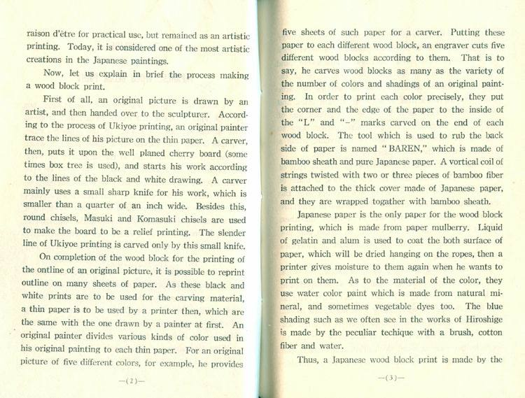

THE OUTLINE OF JAPANESE WOOD BLOCK PRINT Link to heading
Kyoto, Uchida Wood Block Printing Co., LTD, undated but ca 1950 Link to heading

Japanese Wood Block Prints Uchida Wood Block Printing Co., Kyoto
A wood block print was derived from China, but the technique in itself had made remarkable progress since it was brought to Japan. In the primitive days, a simple design was carved on a small piece of wood, and putting some indian ink on the surface of the wood they pressed it on a sheet of paper. In order to have a larger print, they stamped many such small designs on the same paper. They gradually wanted to print a larger design on the paper but realized it difficult to stamp it with a large wood block on which such design was carved. Putting a wood block on a stand they tried to rub the paper placed on the wood block. This is a basic way of printing a modern Japanese wood block print.
In the Ashikaga era (1603—1867 A. D.) and before days, a wood block print was only a black and white one, or on which painted with a hair-brush.
In the beginning of the Tokugawa age, however,
the color-printing was created and made tremendous progress, until the golden age of Ukiyoe prints.
With the advent of the printing machinery in the Meiji era, (1867—1911 A. D.), the wood-print lost its raison d’être for practical use, but remained as an artistic printing. Today, it is considered one of the most artistic creations in the Japanese paintings.
Now, let us explain in brief the process making a wood block print.
First of all, an original picture is drawn by an artist, and then handed over to the sculpturer.
According to the process of Ukiyoe printing, an original painter trace the lines of his picture on the thin paper. A carver, then, puts it upon the well planed cherry board (some times box tree is used), and starts his work according to the lines of the black and white drawing. A carver mainly uses a small sharp knife for his work, which is smaller than a quarter of an inch wide. Besides this, round chisels, Masuki and Komasuki chisels are used to make the board to be a relief printing. The slender line of Ukiyoe printing is carved only by this small knife.
On completion of the wood block for the printing the outline of an original picture, it is possible to reprint it on many sheets of paper. As these black and white prints are to be used for the carving material, a thin paper is to be used by a printer then, which are the same with the one drawn by a painter at first. An original painter divides various kinds of color used in his original painting to each thin paper. For an original picture of five different colors, for example, he provides five sheets of such paper for a carver. Putting these paper to each different wood block, an engraver cuts five different wood blocks according to them. That is to say, he carves wood blocks as many as the variety of the number of colors and shadings of an original paint- ing. In order to print each color precisely, they put the corner and the edge of the paper to the inside of the “L” and “—” marks carved on the end of each wood block. The tool which is used to rub the back side of paper is named “BAREN,” which is made of bamboo sheath and pure Japanese paper. A vertical coil of strings twisted with two or three pieces of bamboo fiber is attached to the thick cover made of Japanese paper, and they are wrapped together with bamboo sheath.
Japanese paper is the only paper for the wood block printing, which is made from paper mulberry. Liquid of gelatin and alum is used to coat the bark surface of paper, which will be dried hanging on the ropes, then a printer gives touches to them again when he wants to print on them. As to the material of the color, they use water color paint which is made from natural mi- nerals, and sometimes vegetable dyes too. The blue shading such as we often see in the works of Hiroshige is made by the peculiar technique with a brush, cotton fiber and water.
Thus, a Japanese wood block print is made by the combined effort of a painter, a carver and a printer. To become a skillful carver or printer of a wood block print, it requires untired effort and indefatigable mind for more than ten years, and still more to be an ex- perienced original painter. A carver studies to carve short straight lines first, next, long straight lines, and then curved complicated lines. In the golden age of Ukiyoe, for instance, an experienced carver used to engrave the face and the hair of a woman, while a beginner carved the other parts of the woman.
A printer’s work is very hard as well as that of a carver. The brush used for the printing is made of hard horse main. A new brush is to be put over the fire to make its surface smooth. The surface of brush are also rubbed against a shark skin to be made smoother, until it becomes as soft as velvet. A brush can not be said to be perfect until it is through all processes mentioned above.
A well trained printer goes to a factory to work with his self-made “baren,” which is so indispensable for him that a master of the factory can easily imagine how his technique is, watching how he makes his baren. An original painter of wood block print is required not only to be a well trained artist but also to be familiar to the technique making wood block prints. It must be to him to know how he originates a painting to be suitable to the wood block print. It may be able to reproduce an ordinary picture but it can not be a creative wood block print. A real wood block print should not be a reproduction of hand painting but it must be the result of an idea originated by such special painter in order to make the wood block print. The landscape prints originated by Hiroshige, Mt. Fuji by Hokusai, and actors' portraits by Kiyomasu and Sharaku are all painstaking masterpieces, but not mere a reproduction of the paint- ings. At present it is true that there are some imi- tation of the old wood block prints but many creative wood block prints are now being produced by true-minded artists in Japan, to hand over the traditional merit point of Japanese Ukiyoe prints.




Example of how the colors are added Link to heading


Final result of all the added colors Link to heading

Source of this file can be found here